CSG-FusionConsistent Sparse-View Gaussian Splatting via Matching-based Fusion
E2E3D Workshop @ ICCV 2025, Best Paper Award
Abstract
CSG-Fusion is a feed-forward 3D Gaussian Splatting model for sparse-view novel view synthesis. It takes two RGB images with no camera poses and no intrinsics and, in one forward pass, outputs a single metric-scale set of 3D Gaussians.
Pose-free, pixel-aligned methods such as Splatt3R predict one Gaussian per pixel in each view, so the region both images see is reconstructed twice, with duplicated and slightly inconsistent primitives. CSG-Fusion finds the view-2 Gaussians that duplicate a view-1 Gaussian, removes them, and moves their features into the Gaussians that remain. On ScanNet++ it improves on Splatt3R at every view overlap, by 1.1 to 2.5 dB PSNR, with fewer Gaussians.
Method Overview
Matching-based Gaussian Filter. Dense MASt3R correspondences link patches of the two images. A view-2 Gaussian is removed when its 3D point lies within 0.07 m of the patch it matches in view 1.
Mask-based Feature Aggregation. Masked cross-view attention moves the features of the matched patches into the Gaussians that stay.
Context-view supervision. The fused Gaussians are also rendered at the two input views, and the MASt3R point heads are fine-tuned with the MASt3R confidence loss.
Comparisons Versus Splatt3R
Drag to orbit; Show removed Gaussians marks in red what the filter drops. Selected examples.
90% overlap
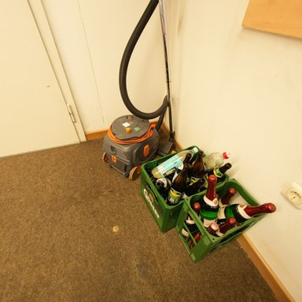
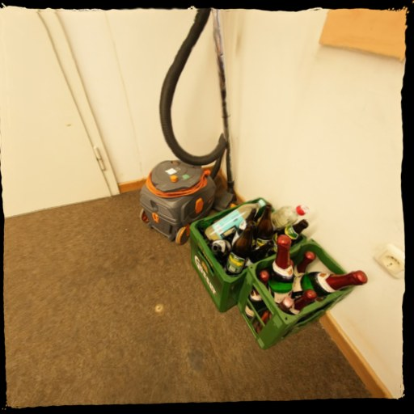
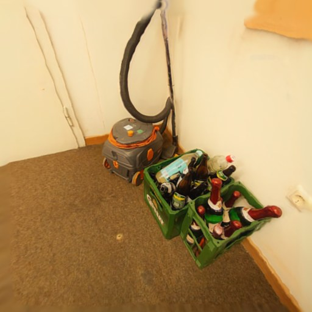
Splatt3RCSG-FusionSplatt3R 524,288 Gaussians, CSG-Fusion 319,806 (39% fewer). PSNR at the held-out view: 14.0 and 24.4 dB.
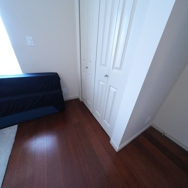
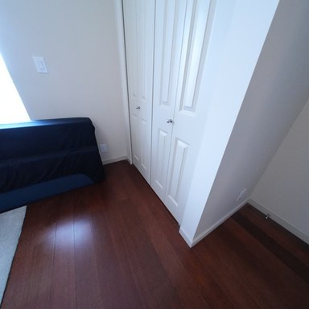
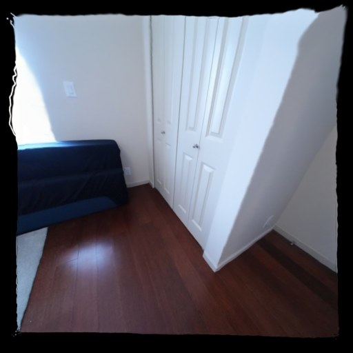
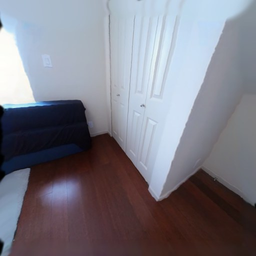
Splatt3RCSG-FusionSplatt3R 524,288 Gaussians, CSG-Fusion 312,774 (40% fewer). PSNR at the held-out view: 14.1 and 23.4 dB.
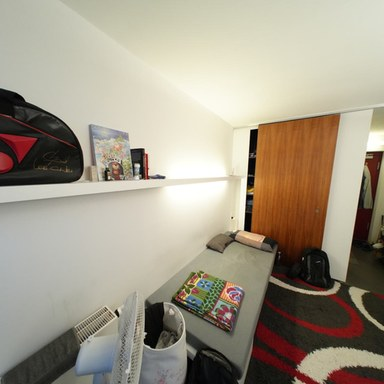
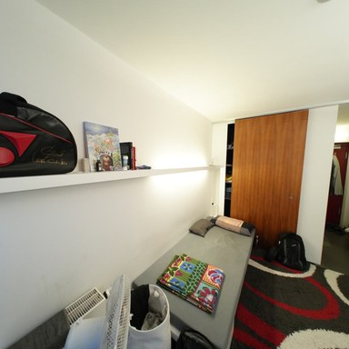
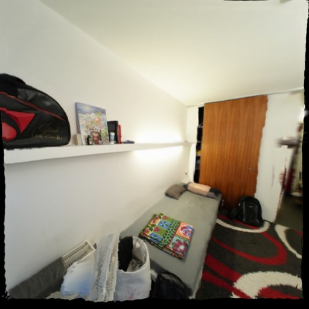
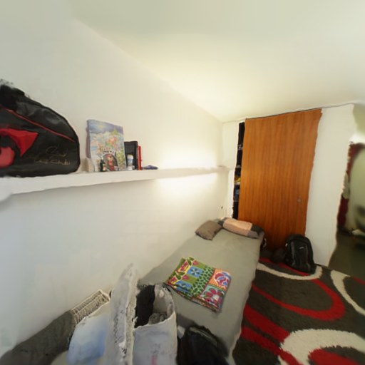
Splatt3RCSG-FusionSplatt3R 524,288 Gaussians, CSG-Fusion 411,814 (21% fewer). PSNR at the held-out view: 16.6 and 24.4 dB.
70% overlap
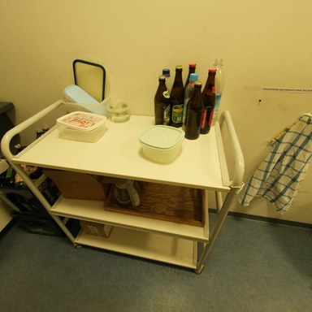
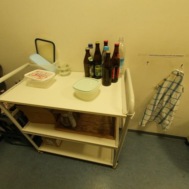
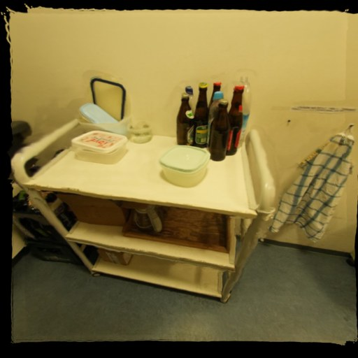
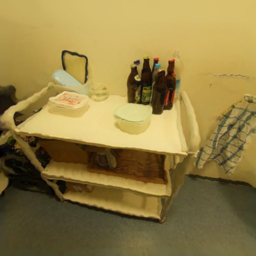
Splatt3RCSG-FusionSplatt3R 524,288 Gaussians, CSG-Fusion 328,785 (37% fewer). PSNR at the held-out view: 14.9 and 24.1 dB.
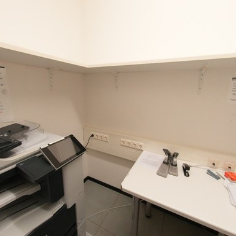
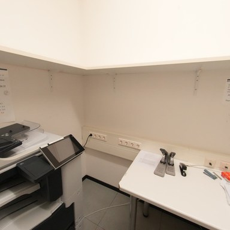
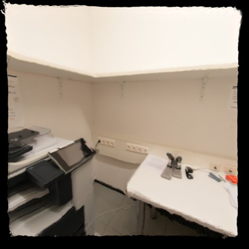
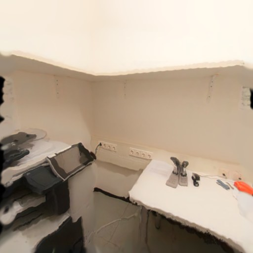
Splatt3RCSG-FusionSplatt3R 524,288 Gaussians, CSG-Fusion 338,325 (35% fewer). PSNR at the held-out view: 11.9 and 22.1 dB.
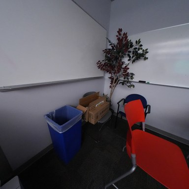
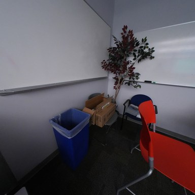
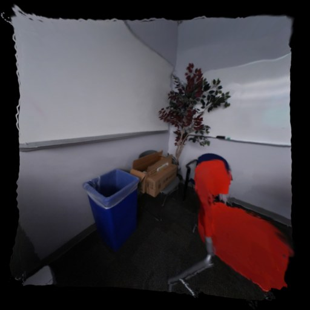
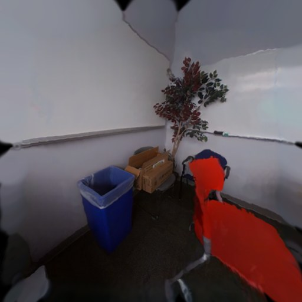
Splatt3RCSG-FusionSplatt3R 524,288 Gaussians, CSG-Fusion 355,662 (32% fewer). PSNR at the held-out view: 14.7 and 22.1 dB.
50% overlap
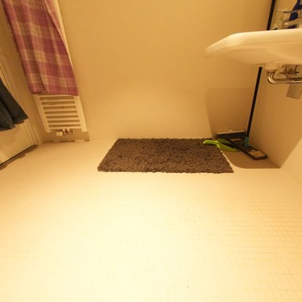
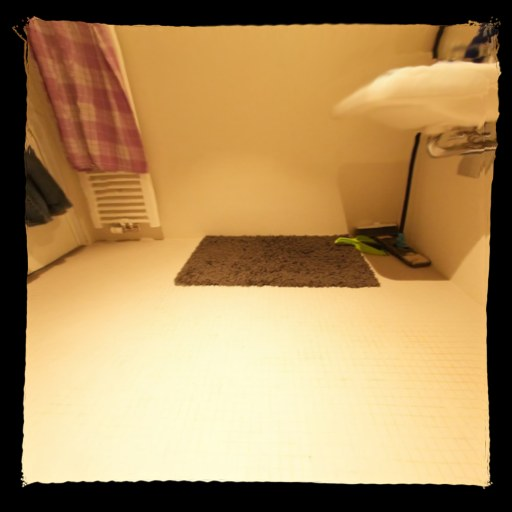
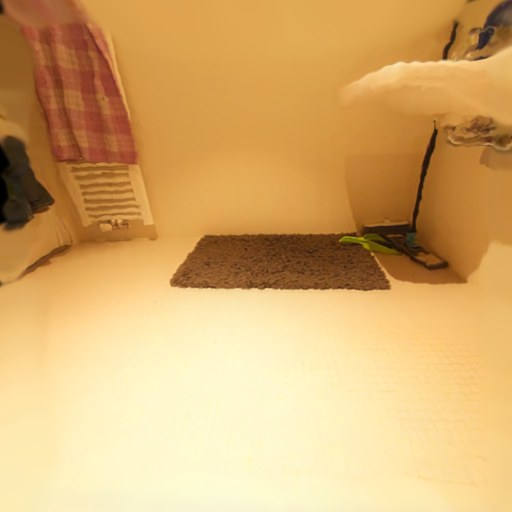
Splatt3RCSG-FusionSplatt3R 524,288 Gaussians, CSG-Fusion 342,397 (35% fewer). PSNR at the held-out view: 17.7 and 24.8 dB.
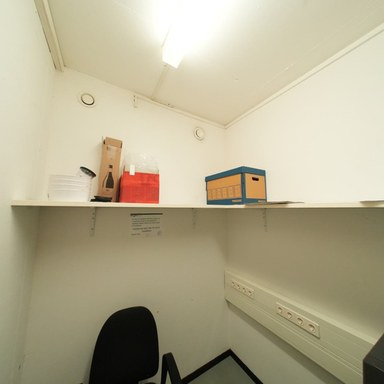
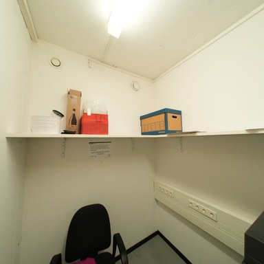
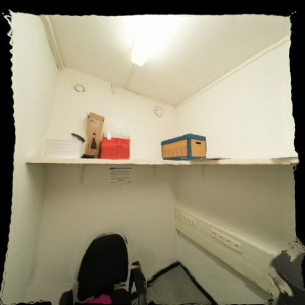
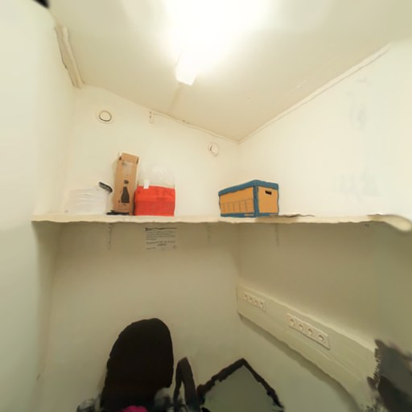
Splatt3RCSG-FusionSplatt3R 524,288 Gaussians, CSG-Fusion 307,107 (41% fewer). PSNR at the held-out view: 16.1 and 22.8 dB.
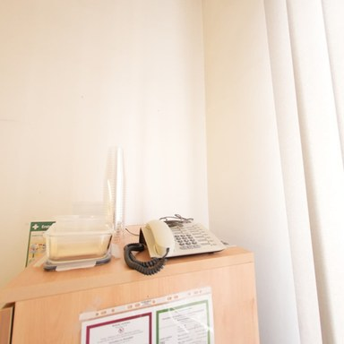
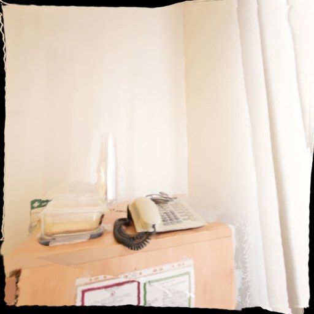
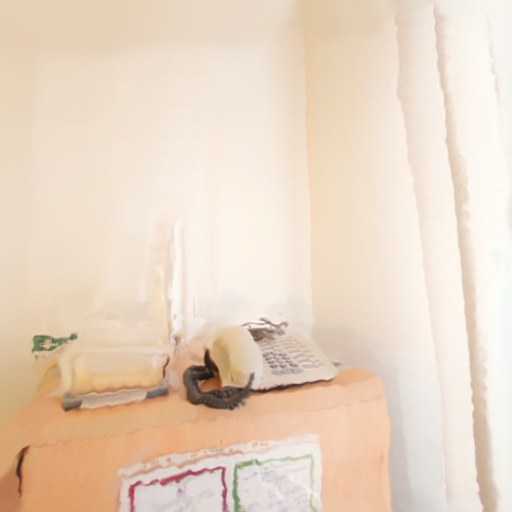
Splatt3RCSG-FusionSplatt3R 524,288 Gaussians, CSG-Fusion 288,050 (45% fewer). PSNR at the held-out view: 11.8 and 23.3 dB.
30% overlap
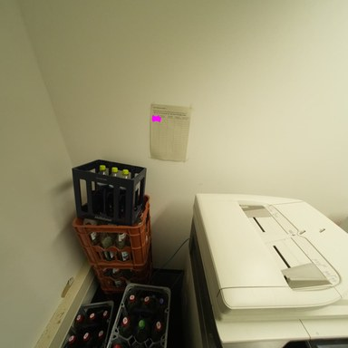
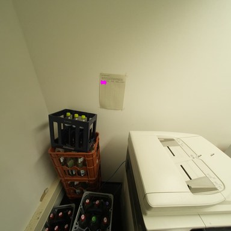
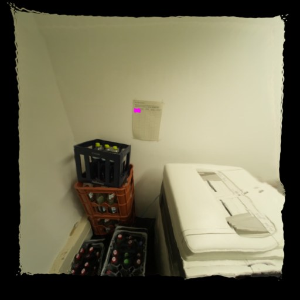
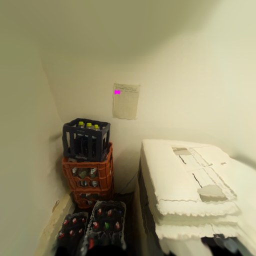
Splatt3RCSG-FusionSplatt3R 524,288 Gaussians, CSG-Fusion 330,282 (37% fewer). PSNR at the held-out view: 15.9 and 24.3 dB.
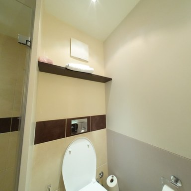
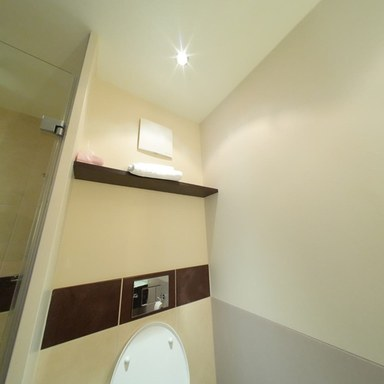
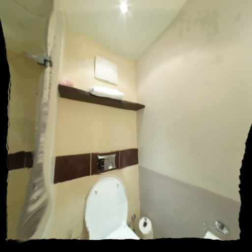
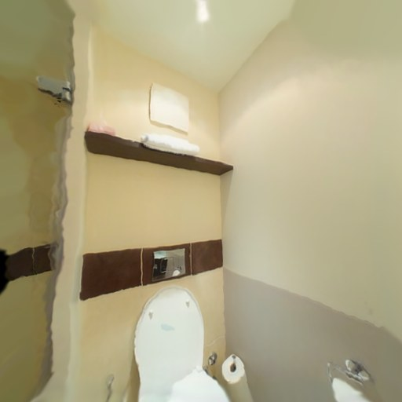
Splatt3RCSG-FusionSplatt3R 524,288 Gaussians, CSG-Fusion 363,412 (31% fewer). PSNR at the held-out view: 16.0 and 26.0 dB.
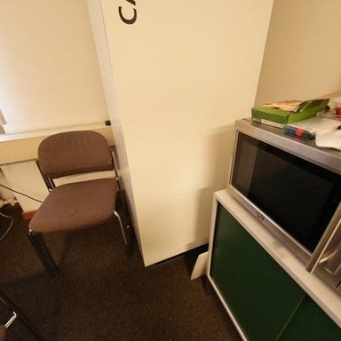
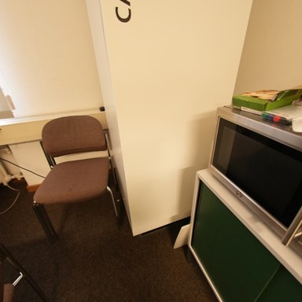
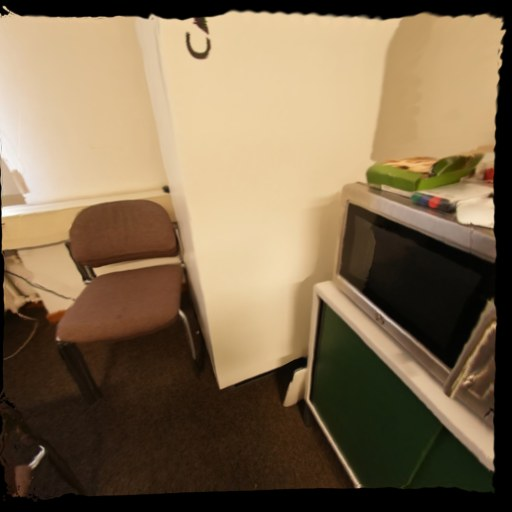
Splatt3RCSG-FusionSplatt3R 524,288 Gaussians, CSG-Fusion 348,330 (34% fewer). PSNR at the held-out view: 15.1 and 21.8 dB.
Comparisons with Baselines
Selected examples where CSG-Fusion has the highest PSNR.
Hover over or tap a render to zoom all methods to the same spot.
90% overlap
70% overlap
50% overlap
30% overlap
PSNR on the pixels the inputs see, best in bold.
Quantitative Results
Nine feed-forward baselines and CSG-Fusion on the same test pairs, mask and metric code, grouped by what each method is given.
| Method | Overlap 90% | Overlap 70% | Overlap 50% | Overlap 30% | ||||||||
|---|---|---|---|---|---|---|---|---|---|---|---|---|
| PSNR ↑ | SSIM ↑ | LPIPS ↓ | PSNR ↑ | SSIM ↑ | LPIPS ↓ | PSNR ↑ | SSIM ↑ | LPIPS ↓ | PSNR ↑ | SSIM ↑ | LPIPS ↓ | |
| Ground-truth context poses, ground-truth target camera | ||||||||||||
| pixelSplat | 26.21 | 0.873 | 0.137 | 23.87 | 0.844 | 0.156 | 22.47 | 0.831 | 0.169 | 21.19 | 0.829 | 0.179 |
| MVSplat | 23.97 | 0.832 | 0.163 | 21.43 | 0.787 | 0.194 | 19.99 | 0.770 | 0.214 | 18.91 | 0.774 | 0.227 |
| DepthSplat | 22.96 | 0.835 | 0.152 | 20.66 | 0.782 | 0.191 | 19.34 | 0.767 | 0.205 | 18.56 | 0.772 | 0.211 |
| No context poses, ground-truth target camera | ||||||||||||
| NoPoSplat† | 12.59 | 0.495 | 0.503 | 12.85 | 0.537 | 0.467 | 13.39 | 0.590 | 0.432 | 14.21 | 0.656 | 0.378 |
| Splatt3R | 17.84 | 0.676 | 0.234 | 18.73 | 0.716 | 0.196 | 19.25 | 0.746 | 0.183 | 19.18 | 0.772 | 0.184 |
| CSG-Fusion (ours) | 20.38 | 0.733 | 0.188 | 20.47 | 0.749 | 0.173 | 20.57 | 0.770 | 0.166 | 20.32 | 0.791 | 0.170 |
| No context poses, target camera predicted from or aligned to the target image | ||||||||||||
| SPFSplat | 9.97 | 0.374 | 0.607 | 10.32 | 0.422 | 0.568 | 11.10 | 0.502 | 0.515 | 12.05 | 0.584 | 0.459 |
| SPFSplatV2-L | 11.38 | 0.432 | 0.554 | 12.18 | 0.512 | 0.470 | 13.36 | 0.595 | 0.400 | 14.54 | 0.670 | 0.336 |
| YoNoSplat‡ | 16.29 | 0.614 | 0.392 | 15.86 | 0.622 | 0.378 | 15.76 | 0.656 | 0.358 | 16.01 | 0.705 | 0.319 |
| AnySplat | 22.21 | 0.780 | 0.138 | 19.53 | 0.743 | 0.171 | 18.20 | 0.738 | 0.186 | 17.38 | 0.753 | 0.185 |
Best in bold, second best underlined, within each group. 256 px, AlexNet LPIPS; 3,336 pairs at 90% overlap, 4,700 at the others. RealEstate10K models are zero-shot; Splatt3R, CSG-Fusion and AnySplat are trained on ScanNet++ (AnySplat among others). † Scene scale from ground-truth poses. ‡ Target pose refined against the target image. Swipe horizontally to view all metrics.
As Published in the Paper
| Method | Overlap 90% | Overlap 70% | Overlap 50% | Overlap 30% | ||||||||
|---|---|---|---|---|---|---|---|---|---|---|---|---|
| PSNR ↑ | SSIM ↑ | LPIPS ↓ | PSNR ↑ | SSIM ↑ | LPIPS ↓ | PSNR ↑ | SSIM ↑ | LPIPS ↓ | PSNR ↑ | SSIM ↑ | LPIPS ↓ | |
| pixelSplat (GT cams) | 25.623 | 0.856 | 0.184 | 23.379 | 0.827 | 0.202 | 22.021 | 0.816 | 0.208 | 20.819 | 0.818 | 0.202 |
| MVSplat (GT cams) | 16.053 | 0.582 | 0.415 | 14.285 | 0.527 | 0.430 | 13.530 | 0.536 | 0.417 | 13.159 | 0.574 | 0.387 |
| NoPoSplat | 17.571 | 0.653 | 0.343 | 15.401 | 0.610 | 0.373 | 14.616 | 0.621 | 0.368 | 14.669 | 0.667 | 0.331 |
| Splatt3R | 16.479 | 0.679 | 0.231 | 17.302 | 0.718 | 0.194 | 17.763 | 0.746 | 0.183 | 17.746 | 0.772 | 0.186 |
| CSG-Fusion (ours) | 19.277 | 0.730 | 0.186 | 19.249 | 0.750 | 0.171 | 19.193 | 0.770 | 0.166 | 18.815 | 0.790 | 0.172 |
Each baseline with its own evaluation code. Bold and underline rank the pose-free methods. NoPoSplat is trained on RealEstate10K.
Efficiency
Cost of reconstructing two images and rendering one view. CSG-Fusion renders 26% fewer Gaussians than Splatt3R, the pixel-wise model at the same resolution.
| Method | Latency ↓ | Peak memory (GiB) ↓ | Model | |||||||||
|---|---|---|---|---|---|---|---|---|---|---|---|---|
| reconstruct | target camera | render | total | GPU | weights | host | GMACs | Gaussian type | Gaussians | params | input px | |
| Ground-truth context poses | ||||||||||||
| pixelSplat | 1.08× | – | 0.04× | 1.12× | 2.7 | 0.5 | 2.7 | 770 | pixel-wise, 3 each | 393k | 119M | 256 |
| MVSplat | 0.53× | – | 0.03× | 0.56× | 1.1 | <0.1 | 2.5 | 169 | pixel-wise | 131k | 12M | 256 |
| DepthSplat | 0.88× | – | 0.03× | 0.91× | 2.5 | 1.3 | 2.9 | 555 | pixel-wise | 131k | 354M | 256 |
| No context poses | ||||||||||||
| NoPoSplat | 0.95× | – | 0.04× | 0.99× | 2.6 | 2.3 | 2.1 | 406 | pixel-wise | 131k | 612M | 256 |
| Splatt3R | 1.44× | – | 0.04× | 1.49× | 3.3 | 2.7 | 2.1 | 1,653 | pixel-wise | 524k | 732M | 512 |
| CSG-Fusion | 0.95× | – | 0.05× | 1.00× | 5.1 | 2.8 | 2.5 | 1,958 | filtered | 387k | 740M | 512 |
| No context poses, target camera estimated | ||||||||||||
| SPFSplat | 1.02× | 0.53× | 0.04× | 1.59× | 2.6 | 2.3 | 2.2 | 406 | pixel-wise | 131k | 616M | 256 |
| SPFSplatV2-L | 0.88× | 0.02× | 0.03× | 0.94× | 4.8 | 4.6 | 2.1 | 617 | pixel-wise | 100k | 1223M | 224 |
| YoNoSplat | 0.99× | (27×) | 0.04× | 1.02× | 3.8 | 3.6 | 2.4 | 772 | filtered | 71k | 965M | 224 |
| AnySplat | 1.68× | 0.95× | 0.03× | 2.67× | 3.5 | 2.7 | 3.5 | 2,786 | voxel-merged | 365k | 1191M | 448 |
100 pairs, batch 1, one GPU, each method with its released code and resolution. Latency is relative to CSG-Fusion; target camera is the extra time of methods that estimate it, in brackets YoNoSplat's test-time alignment. Gaussian counts depend on the resolution; voxel-merged ones do not compare with the others. GMACs count matrix products, convolutions and attention of the reconstruction.
Two to Eight Views Without Retraining
The two-view model also runs on more images: pairs are chained, and each view is filtered against all earlier ones. With eight views and MASt3R this removes 35.4% of the Gaussians for 0.12 dB PSNR.
Eight input images
MASt3R, chained pairs
VGGT*, one joint pass
Rendered at the estimated input cameras.
Placement and Filtering
| Backbone, placement, filter | PSNR ↑ | PSNR ↑, 8 views | Gaussians removed ↑ | |||||
|---|---|---|---|---|---|---|---|---|
| 2 views | 4 views | 8 views | full image | input cameras | 2 views | 4 views | 8 views | |
| MASt3R, anchored to view 1, none | 20.68 | 21.00 | 21.03 | 17.10 | 15.45 | 0.0% | 0.0% | 0.0% |
| MASt3R, anchored to view 1, ref | 20.60 | 20.88 | 20.87 | 17.01 | 15.40 | 22.3% | 22.1% | 19.1% |
| MASt3R, chained pairs, none | 20.68 | 20.87 | 20.67 | 16.88 | 16.11 | 0.0% | 0.0% | 0.0% |
| MASt3R, chained pairs, ref | 20.60 | 20.73 | 20.54 | 16.75 | 15.94 | 22.3% | 24.8% | 28.4% |
| MASt3R, chained pairs, all | 20.60 | 20.72 | 20.55 | 16.73 | 15.90 | 22.3% | 28.2% | 35.4% |
| VGGT*, anchored to view 1, ref | 20.53 | 20.12 | 19.44 | 16.22 | 14.97 | 17.7% | 16.5% | 13.8% |
| VGGT*, chained pairs, ref | 20.53 | 20.07 | 19.29 | 16.18 | 15.60 | 17.7% | 20.4% | 24.3% |
| VGGT*, chained pairs, all | 20.53 | 20.09 | 19.36 | 16.23 | 15.64 | 17.7% | 22.6% | 29.4% |
| VGGT*, one joint pass, all | 20.53 | 20.32 | 20.05 | 16.74 | 16.16 | 17.7% | 20.1% | 21.9% |
940 samples from 47 scenes; the first three columns score the pixels the first two views see. none keeps every Gaussian, ref filters against the paired view, all against every earlier view (default, highlighted). * VGGT backbone, csg_fusion_vggt.ckpt.
Other Multi-view Methods
CSG-Fusion next to AnySplat, with the same samples, mask and metric code.
| Method | PSNR ↑ | LPIPS ↓ | Gaussians, 8 views | ||||||
|---|---|---|---|---|---|---|---|---|---|
| 2 views | 4 views | 8 views | 2 views | 4 views | 8 views | type | count | below one per pixel | |
| Target camera predicted from the target image | |||||||||
| AnySplat | 18.25 | 20.39 | 21.99 | 0.183 | 0.141 | 0.114 | voxel-merged | 1403k | 12.6% |
| Ground-truth target camera | |||||||||
| CSG-Fusion, MASt3R, anchored, none | 20.68 | 21.00 | 21.03 | 0.163 | 0.158 | 0.159 | pixel-wise | 2097k | 0.0% |
| CSG-Fusion, MASt3R, chained, all | 20.60 | 20.72 | 20.55 | 0.165 | 0.166 | 0.175 | filtered | 1355k | 35.4% |
| CSG-Fusion, VGGT*, joint, all | 20.53 | 20.32 | 20.05 | 0.174 | 0.198 | 0.221 | filtered | 1637k | 21.9% |
Voxel-merged counts do not compare with pixel-wise and filtered ones.
Citation
@InProceedings{Xia_2025_ICCV,
author = {Xia, Yan and Ji, Wenbo and Chen, Weirong and Cremers, Daniel},
title = {CSG-Fusion: Consistent Sparse-View Gaussian Splatting via Matching-based Fusion},
booktitle = {Proceedings of the IEEE/CVF International Conference on Computer Vision (ICCV) Workshops},
month = {October},
year = {2025},
pages = {2653-2662},
doi = {10.1109/ICCVW69036.2025.00276}
}